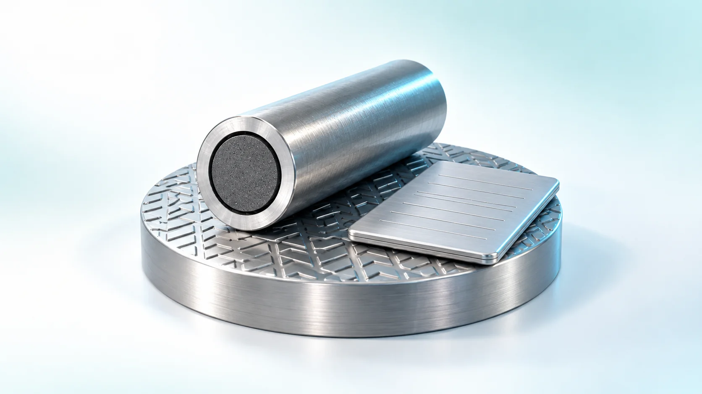
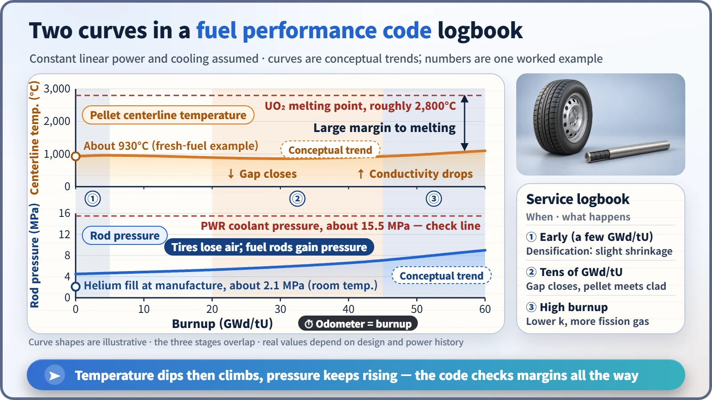
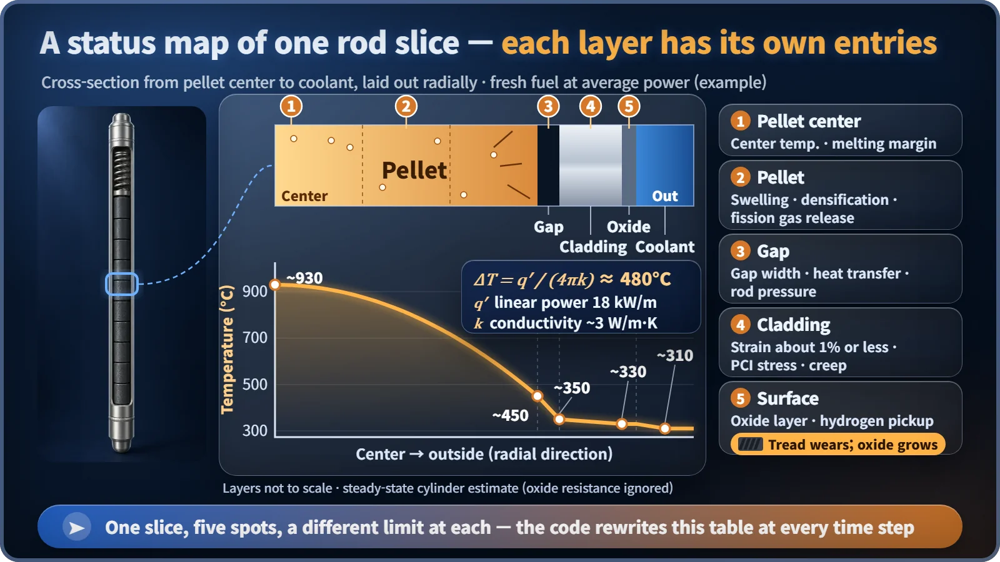

Modeling, Simulation & Computation · 266
Writing the Tire Logbook Before the Drive — What Fuel Performance Codes Do
Fuel rods spend four to six years in the core with no instrument inside them. A fuel performance code writes their logbook in advance.

No commercial reactor measures the internal temperature or pressure of each individual fuel rod. A fuel performance code takes a rod's power history and calculates, step by step through its years in the core, pellet temperature, swelling, gap closure, fission gas release, internal pressure, cladding strain and oxidation, to confirm every design limit is met before the fuel is loaded. [1]
A logbook you have to write before the drive
Take your car in for service and the technician jots a few lines in a little logbook: 40,000 km on the odometer, 5 mm of tread left on the front tires, pressure a bit low, outer edge wearing faster than last time. Keep that logbook long enough and you can see when the tires will need replacing.
Now imagine you couldn't take the tires off and look at them for years. The only option would be to study the driving plan and calculate ahead of time how much tread will be left at what mileage. That is exactly the situation of a fuel rod. Once loaded, it stays in the core for about four to six years, and commercial reactors have no instruments that measure the internal temperature or internal pressure of each individual rod. So engineers write the logbook in advance, by calculation, with a fuel performance code.
Picking up the baton from the core calculation
A fuel performance code follows, step by step through time, everything a single fuel rod goes through inside the reactor. The starting point is the power history: when, at what height, and how hard the rod was burning. That comes from core analysis codes. The core calculation decides where and how much fuel burns; the fuel performance code takes the baton and works out what happens inside a rod that burned that way.
The rod is cut into a few dozen segments along its height, and each segment is viewed as a cross-section: the uranium dioxide pellet at the center divided into several concentric rings, a very thin gap around it, and beyond that the metal tube called the cladding. The code advances time in small steps and records a fresh line of temperature, shape and gas content for every segment.
The logbook has more columns than you'd think
First comes the pellet centerline temperature, the tire's running temperature. Heat is greatest at the center of the pellet and flows outward, and the center-to-surface temperature difference can be estimated with one line:
ΔT = q′ / (4πk)
Here q′ is the linear power, the heat produced by one meter of rod, and k is the pellet's thermal conductivity. With an average power of about 18 kW/m and k = 3 W/m·K, ΔT is roughly 480°C. With the coolant at about 310°C and a few layers to cross, the center of the pellet ends up a little above 900°C, a long way from the roughly 2,800°C at which uranium dioxide melts.
The catch: the longer fuel burns, the more k falls, by about 5 to 7% for every 10 GWd/tU of burnup (gigawatt-days per tonne of uranium, the energy a tonne of fuel has produced). At the same power, older fuel runs hotter inside. [2]
Next is the pellet's size. Only at the very start does it shrink slightly, as tiny manufacturing pores close up. After that it swells, because fission products keep piling up. The cladding, meanwhile, is squeezed inward by the coolant pressure of about 15.5 MPa and slowly creeps down. A gap that started at less than 0.1 mm narrows until pellet and cladding touch.

Instead of leaking, the pressure builds
Tires lose air over time; fuel rods do the opposite. They are filled with helium at about 2.1 MPa when made. Once the rod starts burning, gaseous fission products such as xenon and krypton are produced, and part of them escapes from the pellet into the empty space inside the rod. This is fission gas release, and it grows with pellet temperature and burnup. [3]
Designers check that this pressure stays below the coolant pressure or, if it goes higher, that the cladding does not bulge outward and reopen the gap. A reopened gap passes heat less easily, the pellet gets hotter and releases more gas: a vicious circle worth avoiding. [1]
Tires and fuel rods both hate hard acceleration
If power is raised suddenly after the gap has closed, the hot pellet expands and pushes on the cladding from inside. Add corrosive fission products such as iodine, and the cladding can crack. This is PCI (pellet–cladding interaction), and it is why nuclear plants limit how fast they raise power.
On the outside of the cladding, a thin oxide layer grows where the zirconium-alloy surface meets hot water, and part of the hydrogen from that reaction soaks into the metal and makes the cladding somewhat less ductile. A tube a little over 0.57 mm thick slowly turning into oxide looks a lot like tread wearing away.

Where the logbook gets submitted
| Destination | What the code shows |
|---|---|
| Design | No centerline melting, cladding strain about 1% or less, internal pressure and oxide within limits, all the way to end of life |
| Licensing | Limits met using regulator-approved codes and models; fuel can be loaded only then |
| Other analyses | Initial conditions for accident analysis: stored heat in the pellets, gap state, rod internal pressure |
Well-known code families come in pairs by purpose, such as FRAPCON (long-term normal operation) and FRAPTRAN (fast changes such as accidents), used by the US Nuclear Regulatory Commission, and TRANSURANUS in Europe. [4]
The third use matters more than it sounds. Around 2009 it was pointed out that older models which left out the drop in thermal conductivity had underestimated the heat stored in the fuel, and several countries went back to recheck the related analyses. [2]
Key takeaways
A fuel rod is like a tire you can't inspect for years. The fuel performance code takes the power history and writes the logbook ahead of time: temperature, size, gap, internal pressure, oxide. Only fuel whose every column stays within its limits goes into the reactor, and the same logbook explains why plants raise power slowly and why fuel comes out at a set burnup.